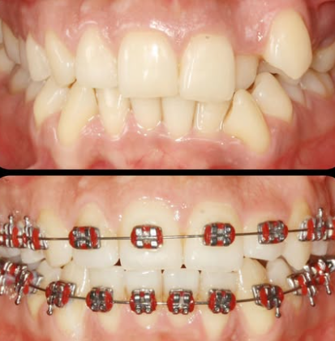
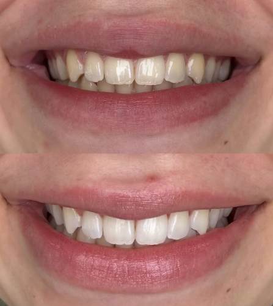

Ortodontia
Lapidamos sorrisos e redefinimos a autoestima dos nossos pacientes. Acompanho seu tratamento ortodôntico durante todo o processo para garantir o melhor resultado.

Clareamento
Esse é o nosso padrão. Um sorriso bonito, harmônico e brilhante, mas sem perder a essência. Aqui a gente lapida sorrisos e transforma histórias.